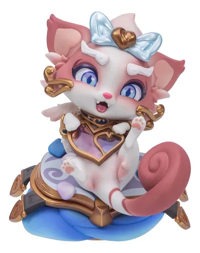

Sobre a Yuumi
Conhecida por sua personalidade carinhosa e travessa, Yuumi é uma personagem especial do universo de League of Legends. Seu poder vem da magia do Livro dos Portais e de sua ligação com a proteção de seus aliados.

A Poderosa Gata Mágica
Yuumi é uma gata mágica e encantadora que viaja pelo mundo ao lado de seu livro mágico, protegendo seus amigos com feitiços, cura e muita fofura.
Conhecida por sua personalidade carinhosa e travessa, Yuumi é uma personagem especial do universo de League of Legends. Seu poder vem da magia do Livro dos Portais e de sua ligação com a proteção de seus aliados.
Entre suas habilidades, Yuumi pode curar aliados, lançar projéteis mágicos e usar seu livro para atravessar grandes distâncias. Seu estilo combina magia, leveza e companheirismo.